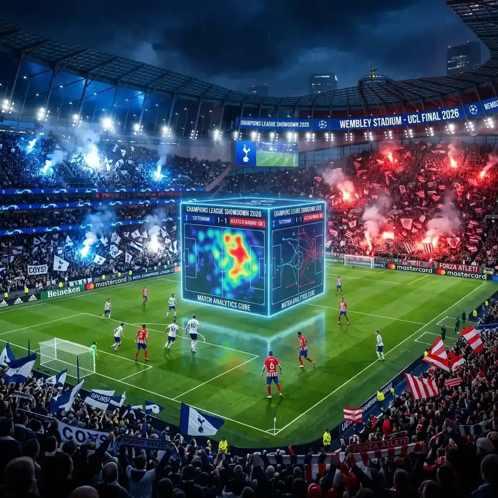

Tottenham vs. Atlético Madrid: Tracking the CL Aggregate Battle

The UEFA Champions League Round of 16 aggregate battle between Tottenham Hotspur and Atlético Madrid was a 180-minute marathon of tactical discipline, individual brilliance, and late-game drama.
On March 18, 2026, the second leg at the Tottenham Hotspur Stadium delivered a match that will be studied by tactical analysts for years. While Tottenham managed to win the night 3-2, it was Atlético Madrid who ultimately secured their spot in the quarterfinals with a hard-fought 7-5 aggregate victory. For the fans watching at home, the shear volume of action—multiple goals, VAR controversies, and tactical shifts—meant that a traditional single-screen broadcast was insufficient to capture the full story of the aggregate comeback attempt.
The Aggregate Narrative: A 180-Minute War of Attrition
To understand the second leg, one must first revisit the first leg in Madrid, where Atlético secured a dominant 5-2 victory. That three-goal cushion proved to be the decisive factor. Heading into the return leg in London, Tottenham knew they needed a historic performance. Ange Postecoglou’s side is built for exactly this kind of scenario: perpetual motion, high-risk attack, and a never-say-die attitude. However, standing in their way was Diego Simeone’s Atlético Madrid—the masters of defensive organization and counter-attacking clinicality.
The first half at the Tottenham Hotspur Stadium saw the hosts piling on the pressure, fueled by a raucous home crowd. Two early goals from Richarlison and James Maddison ignited hopes of a "Miracle of North London." For viewers using YoutubeMulti, the ability to track the aggregate score live alongside the match’s xG metrics was crucial. Seeing the momentum shift as Tottenham closed the aggregate gap to just one goal made for some of the most intense viewing of the season.
Tactical Breakdown: Postecoglou’s "Angball" vs. Simeone’s "Cholismo"
The tactical clash was a masterclass in contrasting styles. Postecoglou’s "Angball" focused on inverted fullbacks, a lightning-fast high line, and constant rotation in the final third. Tottenham’s objective was to overwhelm the Atlético midfield and force their low block into individual errors. This "all-or-nothing" approach resulted in a chaotic, high-scoring affair that suited Tottenham’s attacking players but left them vulnerable at the back.
Simeone, a veteran of these European battles, stuck to his "Cholismo" roots. Atlético’s 5-3-2 mid-block remained incredibly compact, with Koke and Rodrigo De Paul orchestrating play from deep. They were content to let Tottenham have the ball in non-threatening areas, waiting for the precise moment to spring a counter-attack. When Tottenham lost possession, Atlético’s transitions were devastating. Griezmann and Memphis Depay were outlets of pure quality, ensuring that every time Tottenham pushed too high, there was a constant threat of a decisive away goal. This tactical tug-of-war—Postecoglou’s chaos vs. Simeone’s control—was best observed through a dedicated tactical camera feed.
The Turning Points: Griezmann’s Brilliance and Tottenham’s Late Surge
The match swung on several key moments. Antoine Griezmann's goal in the second half, a sublime counter-attacking finish, felt like a dagger to the heart of the London fans. It restored Atlético's two-goal aggregate lead and forced Tottenham into an even more desperate offensive stance. Griezmann’s ability to find space between the lines and dictate play even under immense pressure was a highlight of the series.
Tottenham didn't give up, however. A late goal from Son Heung-min set up a nervy final ten minutes, but Atlético’s defensive "dark arts"—strategic tactical fouls, game-management at goal kicks, and disciplined positioning—saw them through. For fans of tactical analysis, having a dedicated social media feed alongside the match provided instant insights into these game-management techniques and the real-time expert reactions from global pundits.
Managing the Chaos: Multi-Stream Monitoring with YoutubeMulti
A Champions League aggregate battle of this magnitude is a high-information event. Between the live broadcast, the running aggregate score, the away goals (if applicable in the specific tournament rules), and the inevitable VAR checks, there is too much data for a single screen. YoutubeMulti allows fans to create a professional-grade command center for matchday.
Why One Screen Isn't Enough for a CL Comeback Attempt
- Situational Awareness: Dedicate one tile to the main broadcast and another to a wide-angle tactical cam to see how the defenses are shifting.
- Live Statistics: Keep a tile open for Opta statistics, tracking possession, pass accuracy in the final third, and individual player heatmaps.
- Alternative Perspectives: Monitor fan-reaction streams from both London and Madrid to get the authentic atmosphere from both sides of the divide.
- Historical Context: Use a side tile to pull up highlights from the first leg or previous meetings between the two clubs to spot recurring tactical patterns.
Looking Ahead: Atlético’s Quarterfinal Prospects and Spurs’ Rebuilding
Atlético Madrid moves into the quarterfinals with a sense of "job done." Their ability to weather the storm in London proves that they remain one of the most difficult teams to knock out of this competition. As they prepare to face even tougher opposition in the next round, their defensive discipline will be their greatest asset. For Simeone, another deep run in the Champions League cements his legacy as one of the finest knockout managers in history.
Tottenham, while disappointed with the elimination, can take great pride in their performance. Coming within two goals of an aggregate comeback against a team like Atlético shows the potential of "Angball" on the European stage. This series will be seen as a learning experience for a young squad that is still adapting to Postecoglou's high-octane philosophy. The focus now shifts back to the Premier League, where they aim to secure Champions League football for the following season.
Conclusion: The Ultimate Aggregate Experience
The Tottenham vs. Atlético Madrid series was a testament to the enduring drama of European football. It was a 180-minute narrative filled with highs and lows. By embracing multi-stream monitoring tools like YoutubeMulti, fans can ensure they don't miss a single detail of these complex, high-stakes encounters. Don't be a passive observer—be a tactical insider and experience the Champions League like never before.